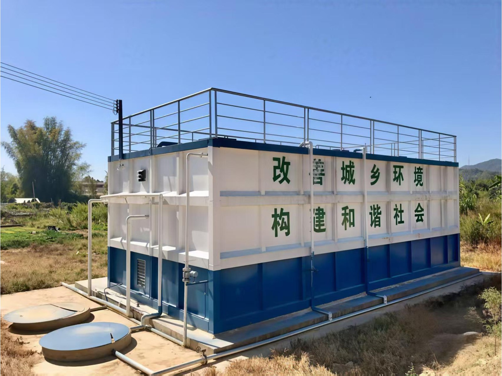
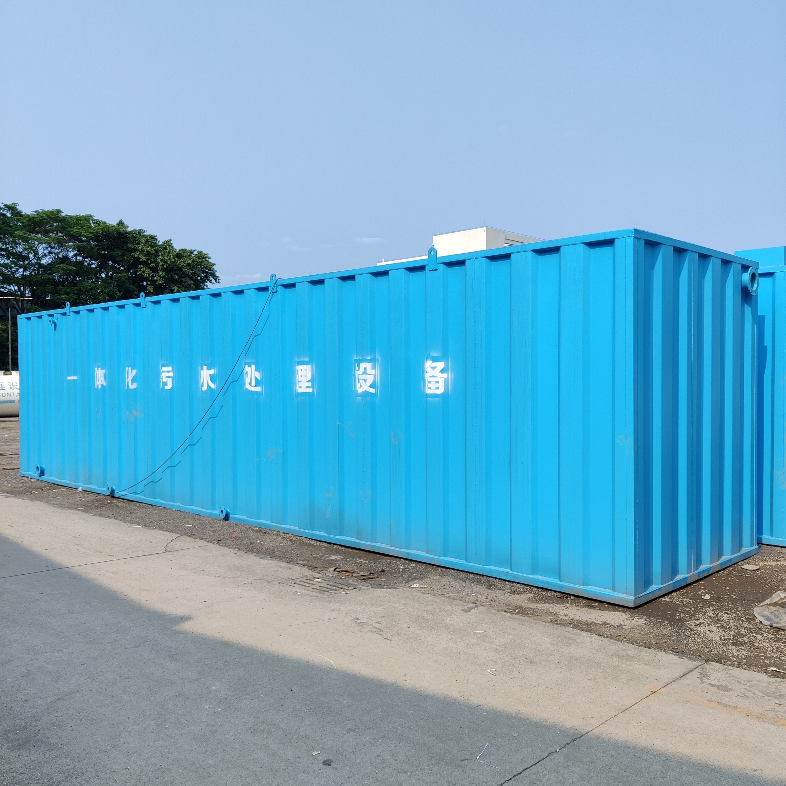
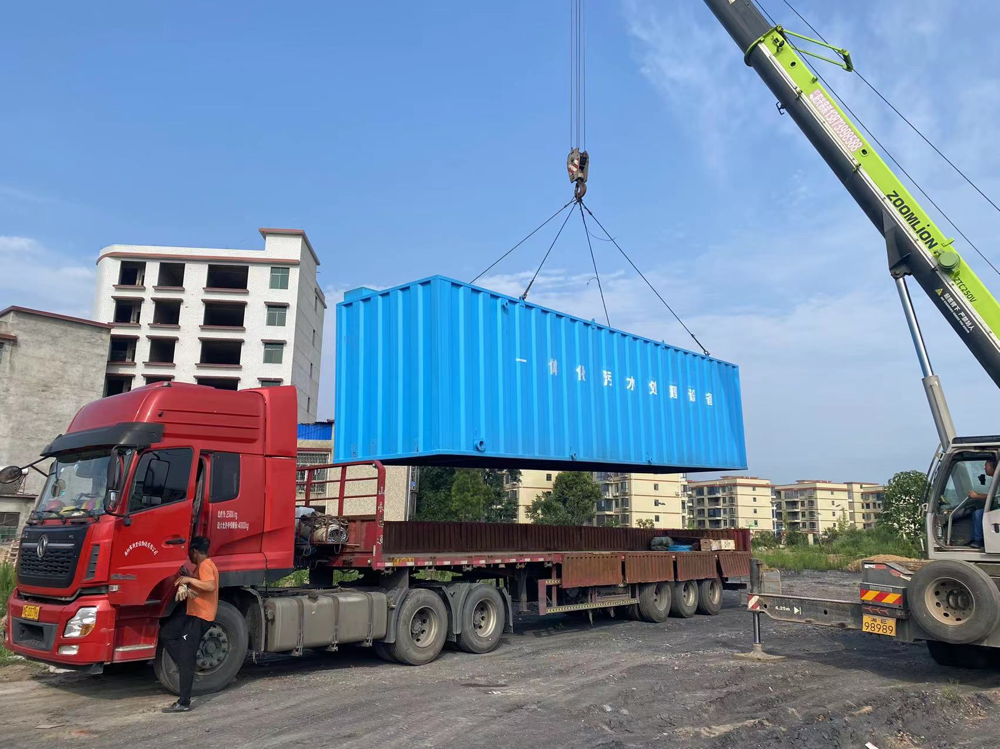
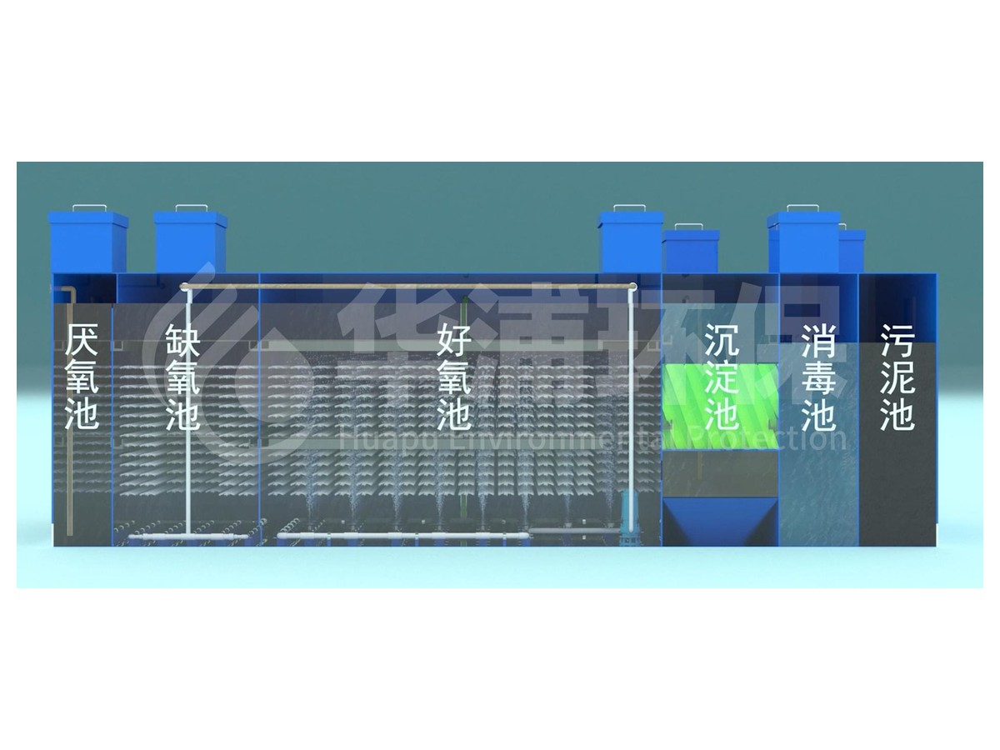
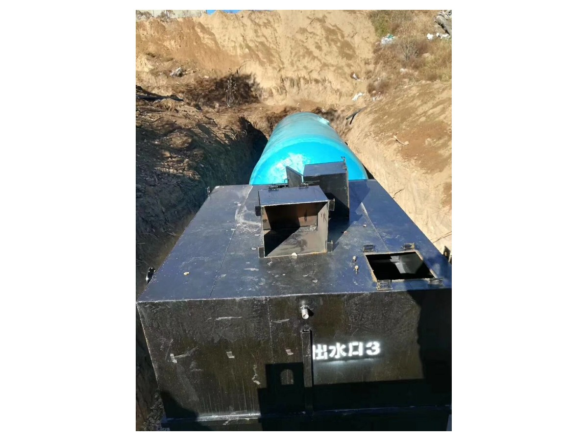
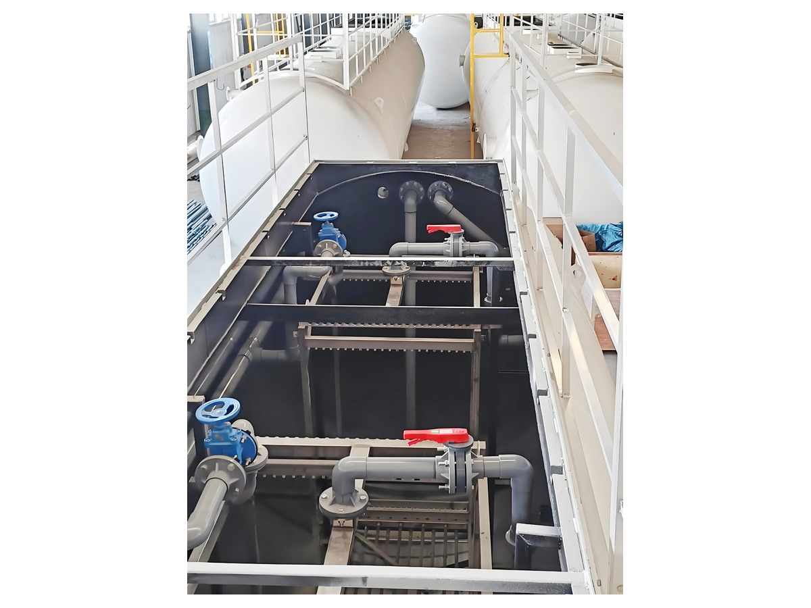
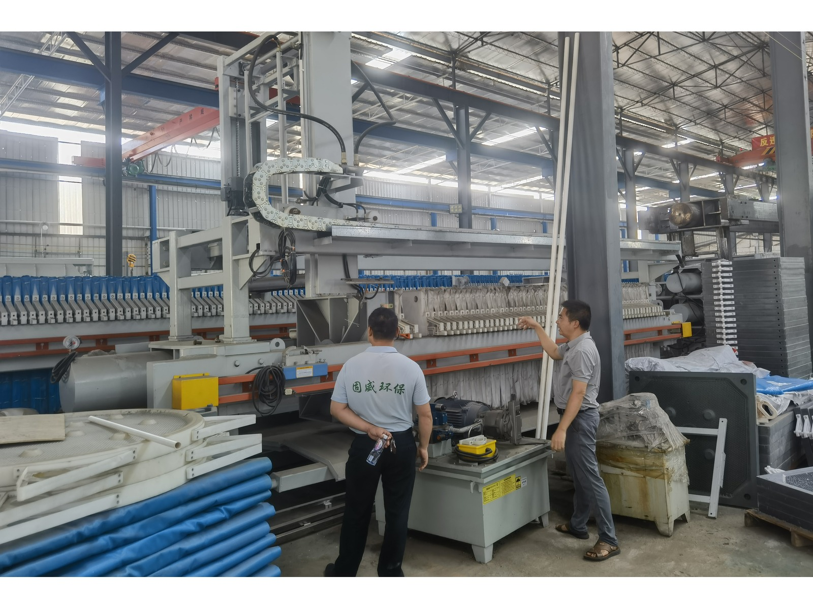

GUWEIENVIRONMENTAL
GUWEIENVIRONMENTALService Support
Equipment supply, installation, commissioning and third-party operation and maintenance contracting for rural wastewater EPC projects.
Start with flow, water quality and the discharge destination, then review the process, equipment and site conditions.
Guwei rural wastewater systems integrate biological treatment, sedimentation, disinfection and controls in modular enclosures, with commissioning completed before dispatch.

Equipment supply, installation, commissioning and third-party operation and maintenance contracting for rural wastewater EPC projects.
Supporting rural wastewater and living-environment improvement projects with test reports, qualification documents and drawings. We welcome engineering contractors and public- and private-sector partners.



Configurations can be discussed for urban and rural communities, village stations, scenic service areas and factory domestic wastewater. Industrial effluent and reclaimed water projects require separate process selection based on water quality and treated water requirements.
Equipment appearance and configuration. Select an image to enlarge.






Select a reference model by treatment capacity, then confirm the configuration against water quality and treatment requirements.
| Model | Treatment capacity (m³/h) |
|---|---|
| GWSY1 | 1 |
| GWSY2 | 2 |
| GWSY3 | 3 |
| GWSY5 | 5 |
| GWSY7 | 7 |
| GWSY10 | 10 |
| GWSY15 | 15 |
| GWSY20 | 20 |
| GWSY25 | 25 |
| GWSY30 | 30 |
| GWSY40 | 40 |
| GWSY50 | 50 |
Equipment capacity depends on influent quality, operating hours and effluent requirements. Final configuration must match the project conditions.
A²/O + MBR combines biological treatment with membrane separation. The process is selected according to water quality and discharge requirements.
A/O biological contact oxidation and A²/O + MBR can be compared for the project. Process and equipment selection depend on water quality and treatment targets.
Used for sludge dewatering and solid–liquid separation within a wastewater treatment system. Configuration depends on sludge characteristics, throughput and dewatering requirements.

Integrate dewatering with the treatment process. Dewatered sludge is subsequently reused or disposed of according to project requirements.
Discuss equipment specifications and supporting systems based on sludge source, properties, throughput and dewatering requirements.
Plan the equipment around available space, sludge feed and filtrate pipework, sludge discharge and maintenance access.
Capacity is the starting point. Water quality, operating hours and discharge targets also need to be reviewed.
Provide average daily flow, concentrated discharge periods and known peaks. If unknown, begin with water consumption and production records.
Identify wastewater sources and provide available test reports with sampling dates. Distinguish routine production from cleaning discharges.
Specify sewer connection, discharge or reuse, together with established limits and project requirements.
Prepare available dimensions, pipe elevations, power supply, maintenance access and new-build or retrofit constraints.
Complete the information available to support discussions about flow, quality and site conditions.
Free download. No contact details required.
| Review item | Information to provide | Confirm during configuration |
|---|---|---|
| Flow & Operating Hours | Average daily flow, peaks and daily operating hours | Treatment capacity, equalization requirements and equipment combinations |
| Water Quality & Treatment Targets | Test reports, discharge destination and target parameters | Appropriate pretreatment, biological treatment and downstream combinations |
| Dimensions & Layout | Site dimensions, connection elevations, transport and lifting conditions | Overall dimensions, materials, connections and maintenance space |
| Power & Operations | Power supply, staffing arrangements and existing monitoring systems | Installed power, operating strategy, alarms and maintenance requirements |
| Supply & Site Work | Equipment procurement, associated construction or retrofit needs | Supply list, installation and commissioning responsibilities, and delivery documentation |
Review flow, water quality and existing interfaces to confirm the equipment's role in the overall project.
Review site distribution, flow fluctuations, maintenance conditions and effluent destination.
First clarify manure collection or production drainage methods, then review pretreatment, peak loads and cost components.
Review treatment, disinfection and management requirements according to hospital type, wastewater source and discharge destination.
Assess equipment suitability and retrofit interfaces using production processes, segregated collection and water quality data.
Start with project type, flow and site conditions, then discuss equipment requirements.
Online enquiries are not currently available. Please contact us by phone. 18026396076
Call us:18026396076